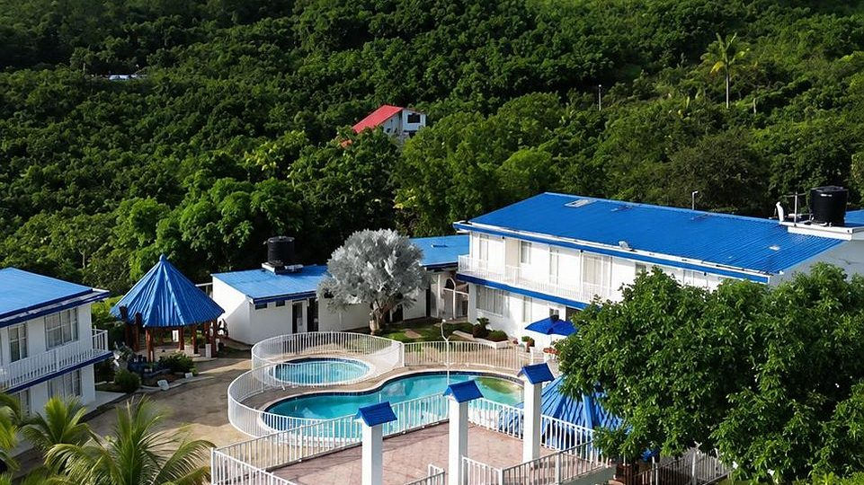

Qué hacer en Tena, Cundinamarca: guía completa para tu escapada
Tena es uno de los secretos mejor guardados del Tequendama: montañas, bosque de niebla, una laguna sagrada y clima cálido a dos horas de Bogotá. Aquí tienes todo lo que puedes hacer, cómo organizarlo y qué tener en cuenta.
Lectura de 8 minHotel Cabaleón
¿Qué hacer en Tena? En pocas palabras: caminar entre bosque de niebla hasta los miradores de la Laguna de Pedro Palo, recorrer caminos reales de piedra, buscar cascadas, observar aves que solo existen en Colombia y terminar el día en una piscina con vista a la cordillera. Esta guía te explica cada plan y cómo combinarlos.
¿Dónde queda Tena y cómo es su clima?
Tena es un municipio de la provincia del Tequendama, en Cundinamarca, a unos 66 km de Bogotá. Fue fundado el 11 de diciembre de 1607, tiene alrededor de 11.500 habitantes y su altitud media es de 1.384 metros sobre el nivel del mar. Bajo su jurisdicción está también el centro poblado de La Gran Vía.
Su gran ventaja es la variedad: el municipio tiene tres pisos térmicos (frío, templado y cálido). Por eso en una misma visita puedes caminar entre robles a más de 2.000 metros y, por la tarde, bañarte en una piscina con clima cálido. En la vereda Escalante, donde está Hotel Cabaleón, el día suele estar entre 24 °C y 28 °C y la noche es fresca.
Los imperdibles de Tena
1. Laguna de Pedro Palo (Tenasucá)
Es el gran tesoro natural del municipio y la mayor reserva de agua de la provincia del Tequendama. Los muiscas la llamaban Tenasucá y era un lugar sagrado. Está en la vereda Catalamonte, a unos 12 km del casco urbano y a 2.011 metros de altura, rodeada de bosque. Para protegerla, el acceso al agua está restringido: se conoce desde senderos y miradores, idealmente con guía. Te lo contamos paso a paso en nuestra guía de la Laguna de Pedro Palo.
2. Caminos reales en piedra
Tena conserva tramos de caminos reales empedrados, como el camino real a Santafé (la antigua Bogotá) y el de Tenasucá. Durante siglos comunicaron la región con la capital y hoy son senderos para caminar despacio, entre árboles y con buena vista. Usa zapatos con buen agarre: la piedra puede estar resbalosa después de la lluvia.
3. Cascada El Tambo y otras caídas de agua
La cascada El Tambo tiene unos 40 metros de caída y es uno de los atractivos naturales del municipio. También están las caídas de agua de San Carlos. Antes de ir, pregunta en el pueblo o a un guía local cómo está el camino, sobre todo en temporada de lluvias.
4. Bosque de niebla y avistamiento de aves
En la parte alta hay bosque de niebla con robles. Alrededor de la Laguna de Pedro Palo se han registrado más de 340 especies de aves, entre ellas varias que solo viven en Colombia, como el inca negro, el colibrí de frente azul y el dacnis turquesa. Madruga: las aves están más activas en las primeras horas del día. Si no tienes binoculares, en Hotel Cabaleón alquilamos equipos de avistamiento.
5. Puente colgante de Flandes
Figura entre los sitios de interés del municipio. Pregunta en el casco urbano cómo llegar y combina la visita con un recorrido por el pueblo.
6. Fiestas y tradiciones
Si quieres conocer a Tena en celebración, estas son sus fechas: la fiesta de la Virgen del Carmen (del 15 al 17 de julio), las ferias y fiestas (a finales de agosto) y las fiestas de La Gran Vía (a principios de diciembre). En esas fechas hay más movimiento: reserva tu alojamiento con tiempo.
7. Piscina y descanso frente a la cordillera
Después de caminar, nada como descansar. Hotel Cabaleón tiene 9.000 m² de jardines con vista a la Cordillera Oriental, piscina para adultos (de 90 a 170 cm), piscina infantil (60 cm), jacuzzi, sauna, baño turco, gimnasio, cancha, mini tejo, billar, ping pong y una huerta turística. Si solo tienes un día, mira cómo es el pasadía con piscina.
Tena en un vistazo
| Plan | Ideal para | Consejo clave |
|---|---|---|
| Laguna de Pedro Palo | Naturaleza, aves y fotografía | Ve con guía y respeta las zonas restringidas |
| Caminos reales | Caminantes y curiosos de la historia | Zapatos con buen agarre |
| Cascada El Tambo | Aventura tranquila | Pregunta cómo está el camino |
| Avistamiento de aves | Madrugadores | Binoculares y ropa de colores neutros |
| Fiestas del pueblo | Cultura y tradición | Reserva con anticipación |
| Piscina, sauna y jacuzzi | Familias y parejas | Aprovecha los turnos de la mañana |
Plan de fin de semana en Tena, paso a paso
Sábado: llegada y piscina
- Sal temprano de Bogotá por la Calle 13 o por la vía Mondoñedo. Aquí está la ruta completa a Tena.
- Almuerza en el camino o en el Restaurante Mangolé, que sirve almuerzo de 12:30 a 3:00 p. m.
- Haz el check-in desde las 3:00 p. m. y disfruta la piscina, abierta hasta las 5:30 p. m.
- No te pierdas el jacuzzi en su turno de la tarde, de 4:30 a 5:00 p. m.
- Cena en Mangolé (de 6:00 a 7:30 p. m.) y disfruta la noche fresca.
Domingo: bienestar y regreso sin afán
- Desayuno incluido, de 8:00 a 10:00 a. m.
- Sauna de 10:00 a 10:30 a. m. y jacuzzi de 10:30 a 11:00 a. m.
- Mini tejo, billar o ping pong antes del almuerzo.
- Check-out hasta las 2:00 p. m., pero puedes seguir en las zonas comunes hasta las 4:00 p. m.
¿Tienes puente festivo? Suma un día de naturaleza
Dedica la mañana del lunes a una caminata con guía hacia los miradores de la Laguna de Pedro Palo o por un camino real, y regresa a Bogotá después del almuerzo. Revisa las fechas en nuestro calendario de puentes festivos.
Tena con niños
Tena es un destino fácil con niños: trayecto corto desde Bogotá, clima agradable y espacio para correr. En el hotel hay piscina infantil de 60 cm, cancha polideportiva, mini tejo, senderos y zonas verdes. Elige caminatas cortas y planas para los más pequeños y recuerda que los menores de 12 años deben estar siempre acompañados de un adulto en la piscina.
Recomendaciones para visitar Tena
- Llega con luz de día: varias vías son veredales y es más fácil recorrerlas con calma.
- Lleva algo de efectivo: en las zonas rurales no siempre hay cajeros cerca.
- Cuida la naturaleza: no dejes basura, no hagas fogatas y no saques plantas ni animales.
- Ten en cuenta la distancia a servicios: desde el hotel, el centro de salud más cercano queda a unos 45 minutos.
- Empaca bien: ropa fresca, saco, vestido de baño, bloqueador y repelente. Aquí está la lista completa de qué llevar.
Qué hay cerca
Desde Hotel Cabaleón, en la vereda Escalante, estos son los tiempos aproximados en carro:
| Destino | Tiempo aproximado |
|---|---|
| La Gran Vía | 25 minutos |
| Mesitas del Colegio | 30 minutos |
| La Mesa | 40 minutos |
| Casco urbano de Tena | 50 minutos |
¿Todavía estás eligiendo destino? Compara Tena con otros pueblos en nuestra guía de pueblos de clima cálido cerca de Bogotá.
Fuentes: ficha del municipio en Wikipedia (consultada el 12 de octubre de 2026) e información de Hotel Cabaleón.
Tu descanso comienza aquí
Elige fechas y habitaciones en nuestra página: ves tu factura al instante, con impuestos y desayuno incluidos, y confirmas con el anticipo del 50 % o el pago total. Directo con el hotel, sin intermediarios.
Preguntas frecuentes
¿Qué hacer en Tena, Cundinamarca?
Visitar los miradores de la Laguna de Pedro Palo, recorrer caminos reales en piedra, conocer la cascada El Tambo, observar aves en el bosque de niebla y descansar en una piscina con vista a la cordillera.
¿A cuánto queda Tena de Bogotá?
A unos 66 km: alrededor de 2 horas en carro, saliendo por la Calle 13 o por la vía Mondoñedo, según el tráfico.
¿Cómo es el clima en Tena?
Tena tiene tres pisos térmicos. En la parte baja, como la vereda Escalante, el día está entre 24 °C y 28 °C; en la parte alta, cerca de la Laguna de Pedro Palo (a más de 2.000 metros), es más fresco.
¿Se puede nadar en la Laguna de Pedro Palo?
No. Es una reserva protegida y el acceso al agua está restringido. Se conoce desde senderos y miradores, idealmente con guía.
¿Qué hacer en Tena con niños?
Piscina infantil, caminatas cortas, cancha, mini tejo y zonas verdes. Los menores de 12 años deben estar siempre acompañados de un adulto en la piscina.
¿Cuántos días se necesitan para conocer Tena?
Un fin de semana alcanza para descansar y conocer lo esencial. Con un puente festivo puedes sumar un día de caminata con guía.
Equipo de Hotel CabaleónComplejo turístico campestre en Tena, Cundinamarca. Publicado el .